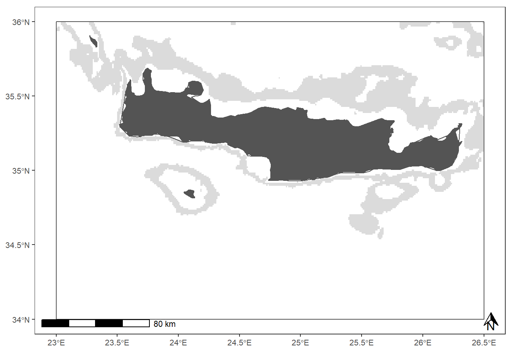

In this chapter are showed the functions and some plot specifications used to analyse and visualize the dataset for the purpose of the GFCM-DWRS workshop.
All the functions here listed are defined in the global_functions.R file. It was necessary to store the default specification in a separate file for tidiness purposes, as the original code was applied on many areas at the same time.
The estimate_fishing_effort.R function is inherited from the r4ais workflow. It performs a spatial intersection between the fishing tracks and the grid cells, then it calculate the lenght of each segment falling within the grid cell.
estimate_fishing_effort <- function(fishing_tracks, grid){
lapply(fishing_tracks, function(x){
if(is.data.frame(x)){
x = st_sf(x)
}
xgear = unique(x$gear)
st_crs(x)=wgs # set crs
if(xgear == "PS"){
x$duration=difftime(x$f_time, x$s_time, units="secs")
x=st_as_sf(x)
xint=st_intersection(grid, x)
xint=data.frame(xint)
xint=xint[,c("grid_id", "gear", "duration")]
xint$fishing_hours=xint$duration/3600
f_hours = aggregate(fishing_hours~grid_id+gear, data = xint, sum)
colnames(f_hours)[ncol(f_hours)] = "f_hours"
grid_edit=merge(grid, f_hours, by="grid_id") # combine effort to grid
return(grid_edit)
}else{
x$distance=st_length(x$geometry, units="m") # estimated fishing track
x$duration=difftime(x$f_time, x$s_time, units="secs")
x$speed_ms=as.numeric(x$distance)/as.numeric(x$duration)
x$speed_kn=x$speed_ms*1.94384
x=st_as_sf(x)
xint=st_intersection(grid, x)
if(nrow(xint) > 0){
xint$observed_swept=st_length(xint)
xint=data.frame(xint)
xint=xint[,c("grid_id","MMSI", "trip", "s_time" ,"gear","observed_swept", "speed_ms")]
xint$fishing_hours=(as.numeric(xint$observed_swept)/xint$speed_ms)/3600
xint
f_hours = aggregate(fishing_hours~grid_id+gear+MMSI+trip+s_time, data = xint, sum) # estimate fishing effort in cells grid
colnames(f_hours)[ncol(f_hours)] = "f_hours"
grid_edit=merge(grid, f_hours, by="grid_id") # combine effort to grid
grid_edit=grid_edit[grid_edit$f_hours>0,]
return(grid_edit)
}
}
})
}Write here some text on the indicators
The ind5 function serve to calculate the MSFD indicator D5, or the extension of the fishing activity in a given area. It calculate the number of cells of the grid were fishing activity was observed over the reference period.
ind5=function(x){
x = unique(x[,c('FID')])
return(x)
}The ind6 serve to calculate the MSFD indicator D6, or the aggregation of the fishing activity in a given area. It calculate the number of cells of the grid containing the 90% of the cumulative distribution of the fishing activity over the refere
ind6=function(x){
x = x[order(x$f_hours, decreasing = T),]
x$cum = cumsum(x$f_hours)
xthr = sum(x$f_hours, na.rm = T) * 0.9
x=x[which(x$cum <= xthr),]
return(x)
}st_fun serve to normalize a vector of data.
st_fun = function(x){
(x-min(x, na.rm = T))/(max(x, na.rm = T) - min(x, na.rm = T))
}Common specifications for ggplot are stored in a file called plot_specifications.R. It was necessary to store the default specification in a separate file for tidiness purposes, as the original code was applied on many areas at the same time. In this way we ensured that all the plots produced were standardized.
For the map plot the standard specification relates to the background image, the cartographic references and the font of the text. Here below is shown the parameters that are fixed:
geom_sf(data = dep, colour = NA, fill = "gray80", alpha = 0.7): define the depth contoursgeom_sf(data = land, fill = "gray33", colour = "gray33"): define the land contoursgeom_sf(data = gsa, fill = NA, colour = "gray33", size = 0.5): define the GSA contourscoord_sf(xlim=c(lims[[1]], lims[[3]]), ylim=c(lims[[2]], lims[[4]]) ): define the bounding box of the plottheme_bw(): set a black and white outline for the backgroundtheme(...): define the position and fontsize for title, legend and axesannotation_scale(location = "bl", width_hint = 0.25): add scale bar. Requires ggspatial package.annotation_north_arrow(location = "br", height = unit(.5, "cm"), width = unit(.5, "cm")): add North arrow. Requires ggspatial package.defo_map=ggplot() +
geom_sf(data = dep, colour = NA, fill = "gray80", alpha = 0.7) +
geom_sf(data = land, fill = "gray33", colour = "gray33") +
geom_sf(data = gsa, fill = NA, colour = "gray33", size = 0.5) +
coord_sf(xlim=c(lims[[1]], lims[[3]]), ylim=c(lims[[2]], lims[[4]]) ) +
theme_bw() +
theme(panel.grid.major = element_blank(), panel.grid.minor = element_blank(),
panel.background = element_rect(fill = NA, colour = NA),
#legend.key.width=unit(0.5,"cm"),
legend.title = element_text(size=text_size),
legend.key = element_rect(colour = "white"),
legend.justification = 'left',
legend.position = 'bottom',
legend.box.just = 'left',
legend.text = element_text(size = text_size),
#axis.text.y = element_text(angle = 90, size=text_size, hjust =1, vjust = 0.5),
axis.text.y = element_text(size=text_size),
axis.text = element_text(size = text_size),
title = element_text(size = text_size),
axis.title = element_text(size = text_size)) +
xlab("") +
annotation_scale(location = "bl", width_hint = 0.25) +
annotation_north_arrow(location = "br", height = unit(.5, "cm"), width = unit(.5, "cm"))
For the time series plot the standard specification relates to the background theme and to the font of the text. Here below is shown the parameters that are fixed:
theme_bw(): set a black and white outline for the backgroundtheme(...): define the position and fontsize for title, legend and axesdefo_ts=ggplot()+
theme_bw() +
theme( plot.title = element_text(hjust = 0),
axis.text = element_text(size = text_size),
title = element_text(size = text_size),
axis.title = element_text(size = 16),
legend.title = element_blank(),
legend.text = element_text(size = text_size),
legend.position = "bottom",
axis.text.x = element_text(angle = 90))+
coord_flip()